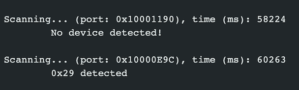

Lab 4 IMU Sensor
The purpose of this lab was to gain familiarity with IMU sensors, another of the sensors that we will equip our robot with as well beginning the run stunts on our robot.
IMU Setup
The IMU measures angular rate and force/acceleration by an object - we focus on the accelerometer + gyroscope data. I conncected the IMU to the Artemis using a QWICC connector as seen in the image below.

I began by installing the SparkFun 9DOF IMU Breakout - ICM 20948 library and using the Example1_Basics example. This prints out the raw accelerometer and gyroscope values, which can be visualized through the serial plotter. In this example, the AD0_VAL is used to change the address of an IMU if multiple IMU's are used. In this case, we are only using 1 IMU so the AD0_VAL should be set to 1.
When running this example, I noticed that one of the acceleration readings is consistently high - displaying gravity - while the others are close to 0 as seen in the video. The acceleration usually changes with rotation. The gyroscope measures the lateral movement (rotation about the axes), also does not feel the effect of gravity, and is very sensitive to little movements.
For debugging purposes, I added a visual indicator to see if the board is running/is stuck. It will blink three times if the Artemis has turned on with a slight delay.
ACCELERROMETER
In order to convert the accelerometer data to pitch and roll, I used the sample code from the IMU lecture as a base. Pitch is the rotation around the X axis and roll is the rotation around the Y axis and can be calculated as seen below.
Pitch: θ = atan2(x_accel , z_accel) Roll: 𝜙 = atan2(y_accel, z_accel)
I then visualized the output at -90, 0, and 90 degrees for pitch and roll.


Accelerometer Noise
However, the accelerometer is very noisy, especailly if the RC car is running, because of the noise from the motors. I ran an FFT on that data - resulting in not too much noise. This led me to use a low pas filter to make the accelerometer more sensitive to that noise when it is on the car. The FFT analysis is shown below. Through this, the frequency found was under .1 Hz, illustrating that the noise was reduced.
TOF 1 Readings
TOF Modes
The TOF sensor has 3 modes that can be used - short, medium, and long. Long distance mode allows for the longest range - 4m but is very sensitive to ambient light. Short distance mode is not as sensitive to ambient light, but has a max ranging distance of 1.3m. I chose to use short distance mode because of its resistance against ambient light as it will lessen the overall error as it can operate in a bright area but at the cost of the range distance.
After deciding which mode to use, I used the ReadDistance example from the Soarkfun library on one of the TOF sensors to understand how the short mode would use. I took the measurements in 4 cm increments from 0 cm to 150 cm. The standard deviation of the data is miniscule, confirming the repeatability of the short distance mode. Using the stopRanging() function, I was able to see that the ranging time is 97ms with .stopRanging() and 95ms without the .stopRanging() function.
2 TOF Sensors
When hooking up both TOF sensors, I had to I set up the initialization of both TOF sensors first, shut down one of the sensors, and change the address of the other sensor. Then the first sensor is turned bck on. My loop executes __ fast, and the current limiting factor is the ranging time. One issue that I had faced was the speed of the readings, it would sometimes get stuck and not continue to display the measurements. I used .startRanging() instead of .stopRanging() to only iitialize the sensors once and also used .checkForDataReady() to only print the appropiate distance reading if there is a new reading available. This is similar to the implementation of the notification handler in the previous lab.
TOF + Bluetooth
Combining the TOF sensor data with the bluetooh functionality from the previous lab, I slightly altered the temperature command to instead be able to send TOF sensor data from the Artemis to the computer. To add a new command, the arduino sketch, the cmd_types file, as well as the demo.ipynb file needed to be updated. The new command is able to collect data from both sensors for a specified amount of time and then the computer receives the reading from both sensors.